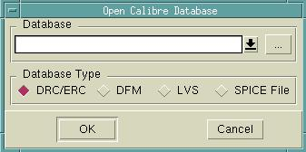
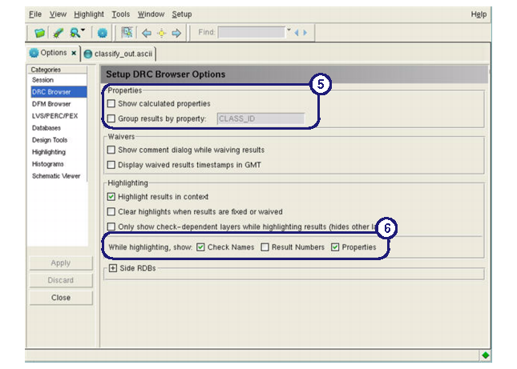

Follow this procedure
to invoke and configure the Calibre RVE interface for use with Calibre OPCverify
results.
Prerequisites
A
Calibre OPCverify command file run with any command that included Error-Centric Section Blocks.
An
ASCII database output produced by following the procedure “Creating the SVRF Rule File” with “Add Database and Output
Reporting” (in the “Using Calibre OPCverify” chapter).
The
accompanying design file result from running the Calibre OPCverify
command file.
Procedure
- In Calibre WORKbench, load
the design file with results on it.
- In the Verification menu,
select Start RVE.
- In the Calibre RVE dialog
box that appears, navigate to and load the ASCII database you created
earlier, loading it as type DRC/ERC.
Figure 1. Calibre RVE 
- When the RVE window appears,
first select the Setup > Options menu option, switching
to the DRC Browser section (Figure 2).
Figure 2. Calibre RVE Options
- Turn off the
following options:
- Select one or both of the
following display options:
These two settings will cause
Calibre RVE to mark a highlight in Calibre WORKbench with the selected
information whenever highlighting commands are issued.
- Click Apply to
save the changes.
- In the View menu,
select the following menu items (Figure 3):
Results
The window should show the rule checks
as a subset of a cell and a numbered list of error markers.